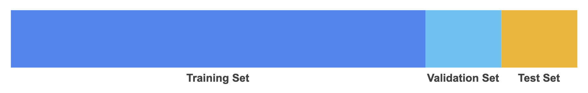
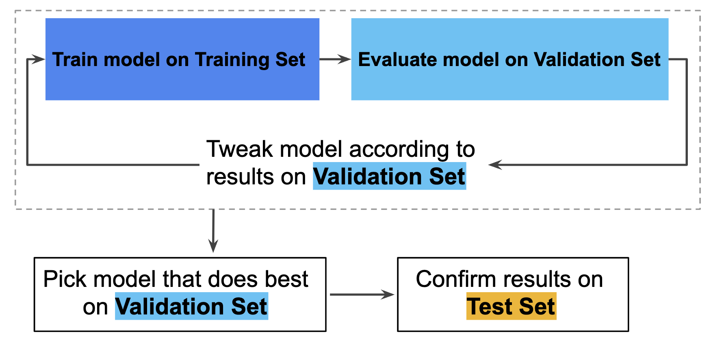

Data
Contents
Data#
Data ingestion#
There are various options how to store and ingest your data but we won’t go into the details of data engineering in this tutorial. However, if you want to learn more about topics like:
the basics of big data (Hadoop ecosystem and Spark),
relational and NoSQL databases,
how to set up a PostgreSQL and MySQL database,
examples of different data architectures and
components of machine learning operations (MLOps),
review this online book:
Jupyter Book
Import data#
The first step is to import the data. This means that you take data stored in a file, a relational database, a NoSQL database or data lakehouse and load it into Python. In our examples, we often use pandas to import CSV files and store it as df (short for DataFrame):
import pandas as pd
path_to_file = "my-file.csv"
df = pd.read_csv(path_to_file)
Data structure#
Next, we get a first impression of the data structure:
Take a look at the 5 top and bottom observations of your data:
df
Show the number of observations and columns:
print(f"We have {len(df.index):,} observations and {len(df.columns)} columns in our dataset.")
View a description of the data, in particular the total number of rows, each attribute’s type, and the number of nonnull values:
df.info()
Data corrections#
Despite the fact that it would be easiest to preprocess your data right away in pandas, we only take care of the most problematic errors (like the occurence of strings in data columns or wrong data formats). We only perform absolutely necessary data preprocessing because processing your data in pandas before passing it to modules like scikit-learn might be problematic for one of the following reasons (scikit learn developers):
Incorporating statistics from data which later becomes our test data into the preprocessors makes cross-validation scores unreliable (known as data leakage), for example in the case of scalers (like z transformation) or imputing missing values.
You may want to include the parameters of the preprocessors in a parameter search (for hyperparameter tuning).
Later we will see that scikit-learn’s ColumnTransformer helps performing different transformations for different columns of the data within a data preprocessing pipeline that is safe from data leakage and that can be parametrized. To each column, a different transformation can be applied, such as preprocessing or a specific feature extraction method.
Note
As a general rule, we only take care of data errors which can be fixed without the risk of data leakage and which we don’t want to include as data preprocessing steps in a pipeline.
Example of data type transformation of one variable:
df['foo'] = df['foo'].astype('float')
Example of data type transformation for multiple variables:
# Convert to categorical
cat_convert = ['foo1', 'foo2', 'foo3']
for i in cat_convert:
df[i] = df[i].astype("category")
Creation of new variables#
During the creation of your plan, you maybe gained knowledge about possible ways to derive new variables from already existing columns in your dataset (e.g. through simple variable combinations). If this is the case, now would be a good time to create these variables.
Pandas offers multiple ways to derive new columns from existing columns (see this pandas tutorial for more examples). Note that you create a new column by assigning the output to the DataFrame with a new column name in between the [] and that operations are element-wise (i.e., no need to loop over rows):
df[my_new_feature] = df[feature_1] / df[feature_2]
df[my_newest_feature] = (df[feature_1] + df[feature_2])/2
Variable lists#
We often need specific variables for exploratory data analysis as well as data preprocessing steps. We can use pandas to create specific lists (provided all columns are stored in the correct data format):
# list of all numerical data
list_num = df.select_dtypes(include=[np.number]).columns.tolist()
# list of all categorical data
list_cat = df.select_dtypes(include=['category']).columns.tolist()
Furthermore, we prepare our data for the following processes of data splitting and building of data pipelines. Note that we use foo as placeholder for our outcome variable:
# define outcome variable as y_label
y_label = 'foo'
# select features
features = df.drop(columns=[y_label]).columns.tolist()
# create feature data for data splitting
X = df[features]
# list of numeric features
feat_num = X.select_dtypes(include=[np.number]).columns.tolist()
# list of categorical features
feat_cat = X.select_dtypes(include=['category']).columns.tolist()
# create response for data splitting
y = df[y_label]
Data splitting#
Before you start analyzing your data, it is a good idea to split your data into a training and test set [Géron, 2019]. We do this because this is the only way to know how well a model will generalize to new cases. Furthermore, we will perform exploratory data analysis only on the training data so we don’t use insights from the test data during the model building process.
Training, evaluation and test set#
The error rate on new cases is called the generalization error (or out-of-sample error), and by evaluating our model on the test set, we get an estimate of this error. This value tells you how well your model will perform on instances it has never seen before. If the training error is low (i.e., your model makes few mistakes on the training set) but the generalization error is high, it means that your model is overfitting the training data.
Note that if we want to evaluate different settings (“hyperparameters”) for models, such as the alpha in Lasso, there is still a risk of overfitting on the test set because the parameters can be tweaked until the model performs optimally (skicit learn developers). This way, knowledge about the test set can “leak” into the model and evaluation metrics no longer report on generalization performance. To solve this problem, yet another part of the dataset can be held out as a so-called “validation set”: training proceeds on the training set, after which evaluation is done on the validation set, and when the experiment seems to be successful, final evaluation can be done on the test set.
Hence, you can greatly reduce your chances of overfitting by partitioning the data set into the three subsets shown in the following figure (Google Developers):

{kind=link}
In this workflow, you pick the model that does best on the validation set and double-check that model against the test set (Google Developers):

{kind=link}
However, by partitioning the available data into three sets, we drastically reduce the number of samples which can be used for learning the model, and the results can depend on a particular random choice for the pair of (train, validation) sets (skicit learn developers). A solution to this problem is a procedure called cross-validation (CV for short). A test set should still be held out for final evaluation, but the validation set is no longer needed when doing CV. In the basic approach, called k-fold CV, the training set is split into k smaller sets.
Train and test split#
We typically use scikit-learn’s train test split function to perform data splitting and use random_state to make this notebook’s output identical at every run (we arbitrarily set the number to 42 but you can choose any other number):
from sklearn.model_selection import train_test_split
X_train, X_test, y_train, y_test = train_test_split(X, y, test_size=0.2, random_state=42)
Data exploration set#
We make a copy of the training data since we don’t want to alter our data during data exploration. We will use this data for our exploratory data analysis.
We create a new DataFrame called df_train where we combine the training features with the corresponding y training labels:
df_train = pd.DataFrame(X_train.copy())
df_train = df_train.join(pd.DataFrame(y_train))
Analyze data#
The goal of this phase is to understand the training data. In particular, exploratory data analysis (EDA) is used to understand important predictor characteristics. Good visualisations will show you things that you did not expect, or raise new questions about the data [Wickham and Grolemund, 2016]: A good visualisation might also hint that you’re asking the wrong question, or you need to collect different data. Furthermore, we want to understand if there are any challenges associated with the data that can be discovered prior to modeling.
Note
The interactive website From Data to Viz leads you to the most appropriate graph for your data.
We will mainly use Pandas, Altair, Seaborn and Matplotlib to visualize data. To learn more about data visualization modules in Python, visit the following resources:
Jupyter Book
Note that in the next section, we will use lists created in Variable lists for some of the steps shown below.
Categorical data#
For categorical data we check the levels and their uniqueness:
df_train.describe(include="category").T
for i in list_cat:
print(i, "\n", df_train[i].value_counts())
for i in list_cat:
print(df_train[i].value_counts().plot(kind='barh', title=i));
If you have variables with many levels and are interested only in the top 10 values:
import seaborn as sns
for i in cat_list:
TOP_10 = df[i].value_counts().iloc[:10].index
g = sns.catplot(y=i,
kind="count",
palette="ch:.25",
data=df,
order = TOP_10)
plt.title(i)
plt.show();
To learn more about data visualizations, visit the following site:
Resources
Numerical data#
For numerical data we take a look at the central tendency and distribution:
# summary of numerical attributes
df_train.describe().round(2).T
# histograms
df_train.hist(figsize=(20, 15));
Numerical grouped by categorical#
We can also investigate numerical data grouped by categorical data:
# median
for i in list_cat:
print(df_train.groupby(i).median().round(2).T)
# mean
for i in list_cat:
print(df_train.groupby(i).mean().round(2).T)
# standard deviation
for i in list_cat:
print(df_train.groupby(i).std().round(2).T)
Relationships#
Correlation with response#
Detect the relationship between each predictor and the response:
sns.pairplot(data=df_train, y_vars=y_label, x_vars=features);
# pairplot with one categorical variable
sns.pairplot(data=df_train, y_vars=y_label, x_vars=features, hue="a_categorical_variable");
# inspect correlation between response and predictors
corr = df_train.corr()
corr[y_label].sort_values(ascending=False)
Correlation between predictors#
Investigate relationships between predictors to detect multicollinearity:
corr = df_train.corr()
corr.style.background_gradient(cmap='Blues')
sns.pairplot(df_train);
# inspect correlations between all variables
corr = df_train.corr()
mask = np.zeros_like(corr, dtype=bool)
mask[np.triu_indices_from(mask)] = True
cmap = sns.diverging_palette(220, 10, as_cmap=True)
fig, ax = plt.subplots(figsize=(10,10))
sns.heatmap(corr, mask=mask, cmap=cmap, annot=True,
square=True, annot_kws={"size": 12});
Instead of inspecting the correlation matrix, a better way to assess multicollinearity is to compute the variance inflation factor (VIF). The smallest possible value for VIF is 1, which indicates the complete absence of collinearity. Typically in practice there is a small amount of collinearity among the predictors. As a rule of thumb, a VIF value that exceeds 5 or 10 indicates a problematic amount of collinearity.
# calculate variance inflation factor
# create new dataframe X_ and add a constant
X_ = df_train[list_num]
X_ = X_.drop(columns=y_label)
X_ = add_constant(X_)
# For each X, calculate VIF and save in dataframe
vif = pd.DataFrame()
vif["VIF Factor"] = [variance_inflation_factor(X_.values, i) for i in range(X_.shape[1])]
vif["Feature"] = X_.columns
vif.round(2)
An alternative way to handle multicollinear features is by performing hierarchical clustering on the Spearman rank-order correlations, picking a threshold, and keeping a single feature from each cluster (see this scikit-learn documentation).
Anomaly detection#
Next, we need to identify missing values and anomalies in the data.
Note that we just gain insights and don’t perform any data preprocessing during the phase of anomaly detection. We only need to decide how to deal with the issues we detect. All data transformations will be performed during feature engineering (with pipelines).
Missing values#
We check the degree of missingness within each predictor in the original dataframe to avoid code duplication (otherwise we first would perform all checks on df_train and afterwards on df_test).
Note
We use the original dataframe df to check for missing values
# missing values will be displayed in yellow
sns.heatmap(df.isnull(), yticklabels=False, cbar=False, cmap='viridis');
# absolute number of missing values
print(df.isnull().sum())
# percentage of missing values
df.isnull().sum() * 100 / len(df)
We cover this topic in the section about preprocessing pipelines.
Outlier and novelty detection#
Many applications require being able to decide whether a new observation belongs to the same distribution as existing observations (it is an inlier), or should be considered as different (it is an outlier). Two important distinctions must be made (scikit-learn developers):
outlier detection: The training data contains outliers which are defined as observations that are far from the others. Outlier detection estimators thus try to fit the regions where the training data is the most concentrated, ignoring the deviant observations.
novelty detection: The training data is not polluted by outliers and we are interested in detecting whether a new observation is an outlier. In this context an outlier is also called a novelty.
Again, we first use data exploration to gain insights about unusual cases. In addition to the plots covered in (histograms are especially relevant), we can use boxenplots for our numerical data:
# boxenplots
for i in list_num:
g=sns.boxenplot(x=df_train[i])
plt.title(i)
plt.show();
To investigate categorical data we can use the same methods as described in Categorical data.
There are various strategies of how to deal with unusual cases which we will cover in preprocessing pipelines.
Feature engineering#
“Applied machine learning is basically feature engineering” Andrew Ng
The understanding gained in data analysis is now used for data preprocessing (e.g., encode categorical data, fix missing values and outliers) and feature engineering.
Feature engineering is the process of using domain knowledge to extract meaningful features (attributes) from raw data. The goal of this process is to create new features which improve the predictions from our model and my include steps like [Kuhn and Johnson, 2019]:
Feature transformation (transform features)
Feature extraction (reduce the number of features by combining existing features)
Feature creation (make new features)
Note that the usage of data pipelines is considered best practice to help avoid leaking statistics from your test data into the trained model during data preprocessing and feature engineering. Therefore, we first take a look at pipelines.
Note
The topic of feature selection is part of the model building process and will be covered in the modeling phase.
Pipelines#
scikit-learn provides a library of transformers for data preprocessing and feature engineering.
Pipelines
scikit-learn’s pipelines documentation
Feature transformation#
Typically, we need to perform feature transformations because predictors may [Kuhn and Johnson, 2019]:
have missing values
contain a small number of extreme values (outliers)
be on vastly different scales
need to be numeric instead of categorical
follow a skewed distribution where a small proportion of samples are orders of magnitude larger than the majority of the data (i.e., skewness).
be censored on the low and/or high end of the range.
Fix missing values#
If we find missing cases in our data, we need to decide how to deal with them. For example, we could:
Get rid of the corresponding observations.
Get rid of the whole attribute.
Impute with some other value (zero, the mean, the median, etc.).
We will include a imputation of missing values in our pipeline.
Fix outliers#
There are various options of how to fix outliers and scikit-learn provides a set of machine learning tools that can be used both for novelty or outlier detection. For a comparison of outlier detection algorithms in scikit-learn, review this site.
For example, one efficient way of performing outlier detection in high-dimensional datasets is to use the random forest algorithm IsolationForest (this algorithm can’t be included in a pipline). When we perform fit on our variable, it returns labels for it: -1 for outliers and 1 for inliers.
from sklearn.ensemble import IsolationForest
list_detect = df_train.drop(y_label).columns.tolist()
clf = IsolationForest(random_state=42)
clf.fit(X_train[list_detect])
y_pred_train = clf.predict(X_train[list_detect])
y_pred_test = clf.predict(X_test[list_detect])
An alternative and more simple approach to handle outliers would be the usage of robust scalers for numeric data, which can be included in a pipline (see [robust scaling](data:scaling:robustscaling).
Feature scaling#
Feature scaling is a method used to change raw feature vectors into a representation that is more suitable for learning algorithms.
Note
Scaling the target values is generally not required.
Types#
Most learning algorithms benefit from standardization (normalization) of the data set since they don’t perform well when the input numerical attributes have very different scales (think of different measurment units like cm and m). For instance, many elements used in the objective function of a learning algorithm (such as the RBF kernel of Support Vector Machines or the l1 and l2 regularizers of linear models) assume that all features are centered around zero and have variance in the same order (an exception are decision tree-based estimators since they are robust to arbitrary scaling of the data).
In general, standardization uses linear transformers (scalers) which differ from each other in the way they estimate the parameters used to shift and scale each feature.
Scikit-learn also offers QuantileTransformer which provides non-linear transformations in which distances between marginal outliers and inliers are shrunk. Furthermore, PowerTransformer provides non-linear transformations in which data is mapped to a normal distribution to stabilize variance and minimize skewness.
Unlike the previous methods, normalization refers to a per sample transformation instead of a per feature transformation.
StandardScaler#
In our projects, we usually use standardization to scale our features: Standardization centers the data by removing the mean value of each feature, then scale it by dividing features by their standard deviation. This leads to a standard normally Gaussian distribution with zero mean and unit variance.
Scikit-learn provides a transformer called StandardScaler for this:
from sklearn.preprocessing import StandardScaler
scaler = StandardScaler()
Note that StandardScaler cannot guarantee balanced feature scales in the presence of outliers.
RobustScaler#
If outliers are present in the data set, robust scalers are more appropriate then standard scaler. This Scaler removes the median and scales the data according to the quantile range (defaults to IQR: Interquartile Range). The IQR is the range between the 1st quartile (25th quantile) and the 3rd quartile (75th quantile): RobustScaler.
from sklearn.preprocessing import RobustScaler
scaler = RobustScaler()
MinMaxScaler#
An alternative to standardization is Min-max scaling, also called normalization. Here, values are shifted and rescaled so that they end up ranging from 0 to 1 (e.g., neural networks often expect an input value ranging from 0 to 1). We do this by subtracting the min value and dividing by the max minus the min. Scikit-Learn provides a transformer called MinMaxScaler for this. It has a feature_range hyperparameter that lets you change the range if, for some reason, you don’t want 0–1.
from sklearn.preprocessing import MinMaxScaler
scaler = MinMaxScaler()
Note that MinMaxScaler is very sensitive to the presence of outliers.
Encode categorical features#
Usually algorithms prefer to work with numbers, so we need to convert categorial variables from text to numbers.
Scikit-learn provides a OneHotEncoder class to convert categorical values into one-hot vectors (one-hot encoding) which we will use in our data preprocessing pipeline.
Pandas also has a function to convert categorical variable into dummy/indicator variables: pandas.get_dummies
Feature extraction#
Features may contain relevant but overly redundant information. That is, the information collected could be more effectively and efficiently represented with a smaller, consolidated number of new predictors while still preserving or enhancing the new predictors’ relationship with the response [Kuhn and Johnson, 2019]. In that case, feature extraction can be achieved by simply using the ratio of two predictors or with the help of more complex methods like pricipal component analysis.
If your number of features is high, it may be useful to reduce it with an unsupervised step prior to supervised steps. You can reduce features with different unsupervised dimensionality reduction methods in scikit-learn.
Custom feature operations#
Although scikit-Learn provides many useful transformers, eventually you may need to write your own functions for tasks such as custom data cleaning procedures or feature engineering (like creating new features).
If you want your transformer to work with scikit-Learn functionalities (such as pipelines), all you need to do is create a class and implement three methods:
fit()(returning self),transform(), andfit_transform().
You find a code template to build your own functions here (see class TemplateTransformer(TransformerMixin, BaseEstimator)).
Note that you get the fit_transform automatically by simply adding TransformerMixin as a base class. If you add BaseEstimator as a base class (and avoid args and kargs in your constructor), you will also get the two extra methods get_params() and set_params() that will be useful for automatic hyperparameter tuning.
Final data pipeline#
In this final step, we will build a typical data preprocessing pipeline using some of the functions covered in the previous sections.
Note
We use features created in Variable lists for some of the steps shown below
from sklearn.pipeline import Pipeline
from sklearn.compose import ColumnTransformer
from sklearn.impute import SimpleImputer
from sklearn.preprocessing import RobustScaler
from sklearn.preprocessing import OneHotEncoder
# build numeric pipeline
num_pipeline = Pipeline(steps=[
('imputer', SimpleImputer(strategy='median')),
('scaler', RobustScaler())
])
# build categorical pipeline
cat_pipeline = Pipeline(steps=[
('imputer', SimpleImputer(strategy='constant', fill_value='missing')),
('onehot', OneHotEncoder(handle_unknown='ignore'))
])
# create full pipeline
full_pipeline = ColumnTransformer(
transformers=[
('num', num_pipeline, feat_num),
('cat', cat_pipeline, feat_cat)])
In the following model building phase (see Model), section “Train and evaluate”, we can easily combine our full pipline with scikit-learn algorithms.